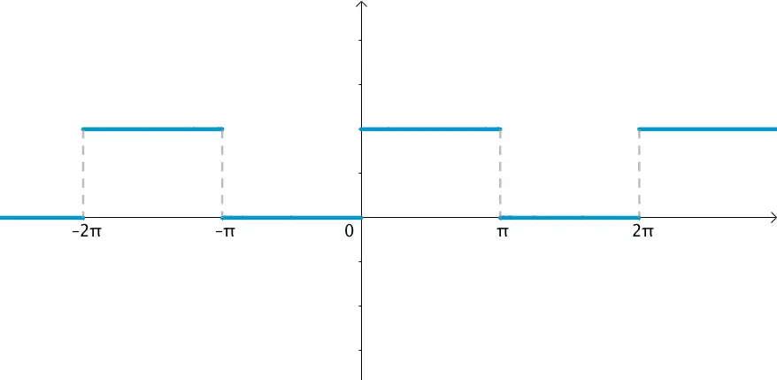
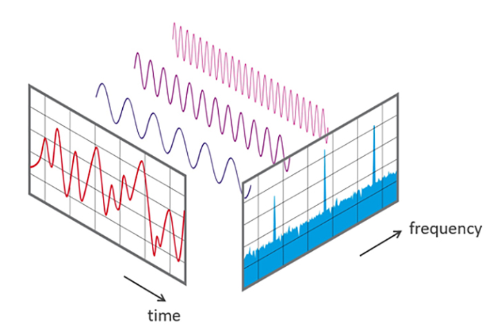
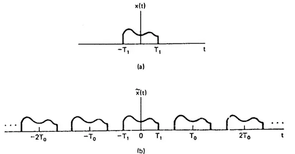
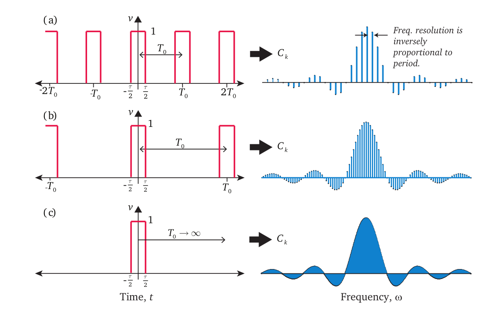

Fourier Transform 1 (FS, FT)
\[ \newcommand{\coloneqq}{\mathrel{\mathrel{\vcenter{:}}=}} \]
内积空间与正交基
我们知道，\(n\) 维线性空间中的 \(n\) 个线性无关向量构成了该空间的一组基，空间中的任一向量都可以唯一表示为这组基的线性组合。进一步地，如果在线性空间中定义内积运算，就得到了内积空间，内积为零的向量称作正交。
值得注意的是，上述“线性空间”、“向量”、“内积”都是抽象的概念，不一定是 \(\mathbb R^n\) 或 \(\mathbb C^n\). 只要定义的加法和数乘运算满足相应的性质，那么就是一个线性空间；只要定义的内积运算满足相应的性质，那么就是一个内积空间。因此，若将上述抽象的“向量”具体化为区间 \([a,b]\) 上的函数，并定义两个函数的内积为： \[ \langle f(x),g(x)\rangle=\int_a^bf^\ast(x)g(x)\mathrm dx\tag{1-1} \] 那么这就是一个合法的内积空间。
因此，设定义在 \(D\) 上的正交函数系 \(\{\varphi_n(x)\mid n\in\mathbb N\}\) 构成函数空间的一个正交基，那么任意 \(D\) 上的函数 \(f(x)\) 都可以表示为该基的线性组合： \[ f(x)=\sum_{n}c_n\varphi_n(x)\tag{1-2}\label{cn-fx} \] 为了表示系数 \(c_n\)，考虑 \(f(x)\) 与 \(\varphi_n(x)\) 的内积： \[ \langle f(x),\varphi_n(x)\rangle=\sum_ic_i\langle\varphi_i(x),\varphi_n(x)\rangle=c_n\langle\varphi_n(x),\varphi_n(x)\rangle\tag{1-3} \]
于是： \[ c_n=\frac{\langle f(x),\varphi_n(x)\rangle}{\langle\varphi_n(x),\varphi_n(x)\rangle}\tag{1-4}\label{fx-cn} \] 式 \(\eqref{cn-fx}\) 指示了已知 \(c_n\) 求 \(f(x)\) 的过程，式 \(\eqref{fx-cn}\) 则指示了已知 \(f(x)\) 求 \(c_n\) 的过程，因此二者构成一个变换对： \[ f(x)=\sum_nc_n\varphi_n(x)\iff c_n=\frac{\langle f(x),\varphi_n(x)\rangle}{\langle\varphi_n(x),\varphi_n(x)\rangle}\tag{1-5} \] 傅里叶级数就是取该正交函数系为三角函数系的特殊情形。
傅立叶级数 (FS)
以 \(2\pi\) 为周期的周期函数
在区间 \([-\pi,\pi]\) 上，利用积化和差公式可以证明，如下的三角函数系两两正交： \[ \{1,\cos x,\sin x,\cos 2x,\sin 2x,\ldots,\cos nx,\sin nx,\ldots\}\tag{2-1}\label{basis1} \] 于是根据第一节的内容，\([-\pi,\pi]\) 上的函数 \(f(x)\) 可以表示为该基的线性组合： \[ f(x)=\frac{a_0}{2}+\sum_{n=1}^{\infty}(a_n\cos nx+b_n\sin nx)\tag{2-2}\label{fs1} \] 且系数为： \[ \begin{align} \frac{a_0}{2}&=\frac{\langle f(x),1\rangle}{\langle1,1\rangle}=\frac{1}{2\pi}\int_{-\pi}^{\pi} f(x)\mathrm dx\\ a_n&=\frac{\langle f(x),\cos nx\rangle}{\langle\cos nx,\cos nx\rangle}=\frac{1}{\pi}\int_{-\pi}^\pi f(x)\cos nx\mathrm dx\\ b_n&=\frac{\langle f(x),\sin nx\rangle}{\langle\sin nx,\sin nx\rangle}=\frac{1}{\pi}\int_{-\pi}^\pi f(x)\sin nx\mathrm dx \end{align}\tag{2-3}\label{fs1c} \]
那么 \([-\pi,\pi]\) 区间之外呢？由于正余弦函数的周期性，我们知道其余部分其实就是 \([-\pi,\pi]\) 上那一段函数的周期延拓。也就是说，上述方法对于以 \(2\pi\) 为周期的函数 \(f(x),\,x\in(-\infty,+\infty)\) 都是行之有效的。
一般周期函数
更一般地，如果周期函数 \(f(x)\) 以 \(2l\) 为周期（\(l>0\) 为任意正数），我们只需要相应地改变基函数的周期即可： \[ \left\{1,\cos\frac{\pi x}{l},\sin\frac{\pi x}{l},\cos\frac{2\pi x}{l},\sin\frac{2\pi x}{l},\ldots,\cos\frac{n\pi x}{l},\sin\frac{n\pi x}{l},\ldots\right\}\tag{2-4}\label{basis2} \] 那么 \(f(x)\) 可以表示为该基的线性组合： \[ f(x)=\frac{a_0}{2}+\sum_{n=1}^{\infty}\left(a_n\cos\frac{n\pi x}{l}+b_n\sin\frac{n\pi x}{l}\right)\tag{2-5}\label{fs2} \] 其中系数为： \[ \begin{align} \frac{a_0}{2}&=\frac{\langle f(x),1\rangle}{\langle1,1\rangle}=\frac{1}{2l}\int_{-l}^{l} f(x)\mathrm dx\\ a_n&=\frac{\left\langle f(x),\cos\left(\frac{n\pi}{l}x\right)\right\rangle}{\left\langle\cos\frac{n\pi x}{l},\cos\frac{n\pi x}{l}\right\rangle}=\frac{1}{l}\int_{-l}^l f(x)\cos\frac{n\pi x}{l}\mathrm dx\\ b_n&=\frac{\left\langle f(x),\sin\frac{n\pi x}{l}\right\rangle}{\left\langle\sin\frac{n\pi x}{l},\sin\frac{n\pi x}{l}\right\rangle}=\frac{1}{l}\int_{-l}^l f(x)\sin\frac{n\pi x}{l}\mathrm dx \end{align}\tag{2-6}\label{fs2c} \]
复指数形式
式 \(\eqref{fs2},\eqref{fs2c}\) 看起来比较冗长，利用欧拉公式 \(e^{jx}=\cos x+j\sin x\)，我们可以让它们变得更简洁。根据欧拉公式有： \[ \cos x=\frac{e^{jx}+e^{-jx}}{2},\quad\sin x=\frac{e^{jx}-e^{-jx}}{2j}=-j\ \frac{e^{jx}-e^{-jx}}{2}\tag{2-7} \] 代入 \(\eqref{fs2}\) 式得： \[ \begin{align} f(x)&=\frac{a_0}{2}+\sum_{n=1}^\infty\left(\frac{a_n}{2}\left(e^{j\frac{n\pi x}{l}}+e^{-j\frac{n\pi x}{l}}\right)-\frac{b_nj}{2}\left(e^{j\frac{n\pi x}{l}}-e^{-j\frac{n\pi x}{l}}\right)\right)\\ &=\frac{a_0}{2}+\sum_{n=1}^\infty\left(\frac{a_n-b_nj}{2}e^{j\frac{n\pi x}{l}}+\frac{a_n+b_nj}{2}e^{-j\frac{n\pi x}{l}}\right)\\ &=c_0+\sum_{n=1}^\infty\left(c_n e^{j\frac{n\pi x}{l}}+c_{-n}e^{-j\frac{n\pi x}{l}}\right)\\ &=\sum_{n=-\infty}^\infty c_n e^{j\frac{n\pi x}{l}}=\sum_{n=-\infty}^\infty c_n e^{jn\omega x} \end{align}\tag{2-8}\label{fs-complex} \] 其中 \(\omega=\frac{2\pi}{2l}=\frac{\pi}{l}\) 表示角频率，且系数为： \[ \begin{align} c_n&=\frac{a_n-b_n j}{2}\\ &=\frac{1}{2l}\left[\int_{-l}^l f(x)\cos\frac{n\pi x}{l}\mathrm dx-j\int_{-l}^l f(x)\sin\frac{n\pi x}{l}\mathrm dx\right]\\ &=\frac{1}{2l}\int_{-l}^lf(x)\left(\cos\frac{n\pi x}{l}-j\sin\frac{n\pi x}{l}\right)\mathrm dx\\ &=\frac{1}{2l}\int_{-l}^lf(x)e^{-j\frac{n\pi x}{l}}\mathrm dx\\ &=\frac{1}{2l}\int_{-l}^{l}f(x)e^{-jn\omega x}\mathrm dx ,\quad n\in\{\ldots,-2,-1,0,1,2\ldots\} \end{align}\tag{2-9}\label{fs-complex-c} \] 这就是傅里叶级数的复指数形式。
当然，\(\eqref{fs-complex}\) 式也可以直接看作是 \(f(x)\) 在下列正交基下的线性组合： \[ \{1,e^{j\omega x},e^{-j\omega x},e^{j2\omega x},e^{-j2\omega x},\ldots,e^{jn\omega x},e^{-jn\omega x},\ldots\}\tag{2-10}\label{basis3} \] 那么系数为： \[ c_n=\frac{\langle f(x),e^{jn\omega x}\rangle}{\langle e^{jn\omega x},e^{jn\omega x}\rangle}=\frac{1}{2l}\int_{-l}^{l}f(x)e^{-jn\omega x}\mathrm dx\tag{2-11} \]
与 \(\eqref{fs-complex-c}\) 式一致。
注意复数的内积运算要乘共轭。
狄利克雷条件
傅立叶级数 \(\eqref{fs-complex}\) 是一个无穷级数，因此一个重要的问题是，级数是否收敛于 \(f(x)\). 狄利克雷条件是级数收敛的充分条件：
- 在任何一个周期中，\(f(x)\) 只有有限个第一类间断点；
- 在任何一个周期中，\(f(x)\) 包含有限个极值点；
- 在任何一个周期中，\(f(x)\) 都绝对可积。
值得注意的是，狄利克雷条件只是充分条件，存在可以展开为傅立叶级数的函数不满足这些条件。最简单的例子就是正弦函数 \(y=\sin x\)，它本身就是傅立叶级数的一个基，自然能展开为傅立叶级数，但它明显不是绝对可积的。
时域、频域与可视化
周期函数 \(f(x)\) 可以看作是一个连续的周期信号，自变量是时间，函数值为信号的值（在信号处理相关书籍中一般写作 \(x(t)\)），我们称之为信号的时域表示。例如下图是一个周期为 \(2\pi\) 的矩形波：

通过傅里叶级数展开 \(\eqref{fs2}\) 式，我们把 \(f(x)\) 写作了不同角频率的正余弦信号的线性叠加。理论上，需要无数多个正余弦信号相叠加才能与原信号相等，但实际应用中不可能处理无限多项，只能在 \(n\) 足够大时做一个截断。截断的地方越大，有限项的傅里叶级数就越逼近原函数，如下图所示：

由于这些正余弦信号是指定的，因此我们只需要计算出前面的系数 \(\{a_0,a_1,b_1,\ldots,a_n,b_n,\ldots\}\) 就能恢复出 \(f(x)\). 考虑到 \(a_n,b_n\) 对应的是角频率为 \(\frac{2l}{n}\) 的正余弦信号，所以我们称这种表示方法为信号的频域表示。为了直观，我们可以画一个直角坐标系，在横坐标为 \(n\) 处画一个高为 \(a_n\) 的柱子，这样就得到了 \(\cos\) 分量的直方图；类似地，将 \(b_n\) 画出来就是 \(\sin\) 分量的直方图。时域和频域是看待同一个周期函数的两个不同角度，如下图所示：

不过，在信号处理中我们一般绘制的是幅度谱和相位谱，二者统称为频谱——其实和画 \(\cos\) 分量与 \(\sin\) 分量本质是一样的，只不过幅度和相位更具有物理意义罢了。具体而言，幅度和相位分别为： \[ \begin{align} &|c_n|=\frac{\sqrt{a_n^2+b_n^2}}{2}=\sqrt{\Re^2(c_n)+\Im^2(c_n)}\tag{2-12}\\ &\theta_n=\arctan\left(\frac{-b_n}{a_n}\right)=\arctan\left(\frac{\Im(c_n)}{\Re(c_n)}\right)\tag{2-13} \end{align} \] 进一步地，功率也是一个常用的物理量，因此也有功率谱： \[ P_n^2=|c_n|^2\tag{2-14} \]
傅里叶变换 (FT)
周期延拓+取极限
通过傅里叶级数，我们将周期函数表达为了不同角频率的 \(\cos\) 和 \(\sin\) 函数的线性组合 \(\eqref{fs2}\) 式或 \(\eqref{fs-complex}\) 式。那么，非周期函数怎么办呢？
考虑一个有限长的函数 \(f(x)\)，将其以 \(2l\) 为周期进行周期延拓，得到周期函数 \(f_p(x)\)，如图所示：

那么，当周期趋近于无限大时，相邻小拷贝之间的距离就被无限拉大，我们构造的周期函数就趋近于原本的函数。
下面我们从 \(f_p(x)\) 的傅立叶级数展开入手： \[ \begin{align} &f_p(x)=\sum_{n=-\infty}^{\infty}c_ne^{jn\omega x}\tag{3-1}\\ &c_n=\frac{1}{2l}\int_{-l}^{l}f_p(x)e^{-jn\omega x}\mathrm dx\tag{3-2}\label{ftcn1} \end{align} \] 由于在 \([-l,l]\) 上有 \(f_p(x)=f(x)\)，因此 \(\eqref{ftcn1}\) 式可以写作： \[ c_n=\frac{1}{2l}\int_{-l}^l f(x)e^{-jn\omega x}\mathrm dx\tag{3-3} \] 又由于在 \((-\infty,-l)\cup(l,\infty)\) 上 \(f(x)=0\)，所以上式的积分上下限可以换成无穷： \[ c_n=\frac{1}{2l}\int_{-\infty}^\infty f(x)e^{-jn\omega x}\mathrm dx\tag{3-4} \] 于是乎： \[ \begin{align} f(x)&=\lim_{\omega\to0}f_p(x)\\ &=\lim_{\omega\to0}\sum_{n=-\infty}^{\infty}c_n e^{jn\omega x}\\ &=\lim_{\omega\to0}\sum_{n=-\infty}^{\infty}\frac{1}{2l}\left(\int_{-\infty}^{\infty}f(t)e^{-jn\omega t}\mathrm dt\right) e^{jn\omega x}\\ &=\lim_{\omega\to0}\sum_{n=-\infty}^{\infty}\frac{\omega}{2\pi}{\color{purple}\left(\int_{-\infty}^{\infty} f(t)e^{-jn\omega t}\mathrm dt\right)e^{jn\omega x}} \end{align}\tag{3-5}\label{fs-lim} \]
极限求和的形式让我们非常想将其变成积分。根据定积分的定义（黎曼和）： \[ \int_a^b f(x)\mathrm dx=\lim_{h\to 0}\sum_{n=0}^{(b-a)/h}f(a+nh)\cdot h\tag{3-6} \] 稍微改写一下： \[ \int_{-a}^a f(x)\mathrm dx=\lim_{h\to0}\sum_{n=-a/h}^{a/h}f(nh)\cdot h\tag{3-7} \] 对比 \(\eqref{fs-lim}\) 式，可以发现 \(u=n\omega\) 就是被积变量，紫色部分（关于 \(n\omega\) 的函数）就是被积函数，因此： \[ \begin{align} &f(x)=\frac{1}{2\pi}\int_{-\infty}^{\infty}F(u)e^{jux}\mathrm du \tag{3-8}\label{IFT}\\ &F(u)=\int_{-\infty}^{\infty}f(x)e^{-jux}\mathrm dx\tag{3-9}\label{FT} \end{align} \]
这里 \(\eqref{FT}\) 式就是傅里叶变换，它将信号从时域表示转换到频域表示；\(\eqref{IFT}\) 式就是傅里叶逆变换，它将信号从频域表示转换到时域表示。二者构成一个傅里叶变换对，记作： \[ f(x)\iff F(u)\tag{3-10} \] 有时我们也用一个符号 \(\mathscr F\) 来表示傅里叶变换，\(\mathscr F^{-1}\) 表示傅里叶逆变换，即： \[ \begin{align} &\mathscr F\{f(x)\}=F(u)=\int_{-\infty}^{\infty}f(x)e^{-jux}\mathrm dx\tag{3-11}\\ &\mathscr F^{-1}\{F(u)\}=f(x)=\frac{1}{2\pi}\int_{-\infty}^{\infty}F(u)e^{jux}\mathrm du\tag{3-12} \end{align} \]
狄利克雷条件
傅立叶变换是一个无穷积分，自然也要考虑其收敛问题。与傅里叶级数类似，傅立叶变换存在的充分条件依旧是狄利克雷条件：
- \(f(x)\) 具有有限个第一类间断点；
- \(f(x)\) 具有有限个极值点；
- \(f(x)\) 绝对可积。
直观理解与可视化
根据上面的推导过程，我们知道傅里叶变换就是周期延拓+傅里叶级数取极限。当 \(\omega\to0\) 时，傅里叶级数中离散可数的角频率 \(n\omega\) 变成了连续变量 \(u\)，相当于原本是用离散可数个正余弦信号去逼近原信号，现在变成了用“连续个”信号去逼近（从自然语言的角度而言，量词“个”就隐含了离散可数的意思，所以这句话比较抽象）。从频谱图上看，相当于每一条“柱子”越来越靠近，最终连成一个连续的函数，也就是 \(F(u)\) 的图像，如下图所示：

等价形式
虽然 \(\eqref{IFT}\) 式和 \(\eqref{FT}\) 式互为逆变换，但一个有系数一个没有系数，形式不是很对称，对强迫症不友好。不过好在做一点变量代换就可以解决这个问题：令 \(u=2\pi {\color{dodgerblue}{u}}\)（黑色是原来的变量，蓝色是代换后的变量），那么： \[ \begin{align} &f(x)=\int_{-\infty}^{\infty}F(2\pi{\color{dodgerblue}{u}})e^{j2\pi{\color{dodgerblue}{u}}x}\mathrm d{\color{dodgerblue}{u}}\tag{3-13}\\ &F(2\pi{\color{dodgerblue}{u}})=\int_{-\infty}^{\infty}f(x)e^{-j2\pi{\color{dodgerblue}{u}}x}\mathrm dx\tag{3-14} \end{align} \]
然后再令 \({\color{dodgerblue}F}(u)=F(2\pi u)\)，那么： \[ \begin{align} &f(x)=\int_{-\infty}^{\infty}{\color{dodgerblue}{F(u)}}e^{j2\pi{\color{dodgerblue}u}x}\mathrm d{\color{dodgerblue}u}\tag{3-11}\label{IFT2}\\ &{\color{dodgerblue}F(u)}=\int_{-\infty}^{\infty}f(x)e^{-j2\pi{\color{dodgerblue}u}x}\mathrm dx\tag{3-16}\label{FT2} \end{align} \] 这样逆变换 \(\eqref{IFT2}\) 和正变换 \(\eqref{FT2}\) 的形式就非常对称了。
另一种更简单的变量代换的方式是令 \({\color{purple}F}(u)=\frac{1}{\sqrt{2\pi}}F(u)\)，那么： \[ \begin{align} &f(x)=\frac{1}{\sqrt{2\pi}}\int_{-\infty}^{\infty}{\color{purple}{F}}(u)e^{jux}\mathrm du\tag{3-17}\label{IFT3}\\ &{\color{purple}F}(u)=\frac{1}{\sqrt{2\pi}}\int_{-\infty}^{\infty}f(x)e^{-jux}\mathrm dx\tag{3-18}\label{FT3} \end{align} \] 不同的书上可能会采用不同的形式，但它们本质都是等价的。
傅里叶变换的性质
线性性
\[ \begin{align} &\mathscr F\{af(x)+bg(x)\}=a\mathscr F\{f(x)\}+b\mathscr F\{g(x)\}=F(u)+G(u)\\ &\mathscr F^{-1}\{aF(u)+bG(u)\}=a\mathscr F^{-1}\{F(u)\}+b\mathscr F^{-1}\{G(u)\} \end{align}\tag{3-19}\label{prop-linear} \]
证明： \[\begin{align}\mathscr F\{af(x)+bg(x)\}&=\int_{-\infty}^{\infty}[af(x)+bg(x)]e^{-jux}\mathrm dx\\&=a\int_{-\infty}^{\infty}f(x)e^{-jux}\mathrm dx+b\int_{-\infty}^{\infty}g(x)e^{-jux}\mathrm dx\\&=a\mathscr F\{f(x)\}+b\mathscr F\{g(x)\}\\\mathscr F^{-1}\{aF(u)+bG(u)\}&=\frac{1}{2\pi}\int_{-\infty}^{\infty}[aF(u)+bG(u)]e^{jux}\mathrm dx\\&=\frac{a}{2\pi}\int_{-\infty}^{\infty}F(u)e^{jux}\mathrm dx+\frac{b}{2\pi}\int_{-\infty}^{\infty}G(u)e^{jux}\mathrm dx\\&=a\mathscr F^{-1}\{F(u)\}+b\mathscr F^{-1}\{G(u)\}\end{align}\] 证毕。
平移性质
\[ \begin{align} &\mathscr F\{f(x-x_0)\}=F(u)e^{-jux_0}\tag{3-20}\label{prop-time-shift}\\ &\mathscr F^{-1}\{F(u-u_0)\}=f(x)e^{ju_0x}\tag{3-21}\label{prop-freq-shift} \end{align} \]
证明： \[\begin{align}&\mathscr F\{f(x-x_0)\}=\int_{-\infty}^{\infty}f(x-x_0)e^{-jux}\mathrm dx=\int_{-\infty}^{\infty}f(t)e^{-ju(t+x_0)}\mathrm dt=F(u)e^{-jux_0}\\&\mathscr F^{-1}\{F(u-u_0)\}=\frac{1}{2\pi}\int_{-\infty}^{\infty}F(u-u_0)e^{jux}\mathrm du=\frac{1}{2\pi}\int_{-\infty}^{\infty}F(t)e^{j(t+u_0)x}\mathrm dt=f(x)e^{ju_0x}\end{align}\] 证毕。
缩放性质
设 \(a\) 为非零常实数，则： \[ \mathscr F\{f(ax)\}=\frac{1}{|a|}F\left(\frac{u}{a}\right)\tag{3-22}\label{prop-scale} \]
证明：若 \(a>0\)，则： \[\mathscr F\{f(ax)\}=\int_{-\infty}^{\infty}f(ax)e^{-jux}\mathrm dx=\frac{1}{a}\int_{-\infty}^{\infty}f(t)e^{-jut/a}\mathrm dt=\frac{1}{a}F\left(\frac{u}{a}\right)\] \(a<0\) 的情形类似。证毕。
共轭对称性
若 \(f(x)\) 是实函数，则 \(F(u)=\mathscr F\{f(x)\}\) 是共轭对称的（实部偶函数，虚部奇函数），即： \[ F^\ast(u)=F(-u)\tag{3-23} \]
证明： \[\begin{align}F^\ast(u)&=\left(\int_{-\infty}^{\infty}f(x)e^{-jux}\mathrm dx\right)^\ast=\int_{-\infty}^{\infty}f^\ast(x)e^{jux}\mathrm dx\\&=\int_{-\infty}^{\infty}f(x)e^{jux}\mathrm dx=\int_{-\infty}^{\infty}f(x)e^{-j(-u)x}\mathrm dx=F(-u)\end{align}\]
若 \(f(x)\) 是虚函数，则 \(F(u)=\mathscr F\{f(x)\}\) 是共轭反对称的（实部奇函数，虚部偶函数），即： \[ \bar F(u)=-F(-u)\tag{3-24} \] 证明类似，略去。
对偶性（互易性）
\[ \mathscr F\{F(x)\}=2\pi f(-u)\tag{3-25}\label{prop-sym} \]
证明：对逆傅里叶变换 \(\eqref{IFT}\) 式做变量代换：\(x\coloneqq -u,\,u\coloneqq x\)，有： \[\begin{align}f(x)=\frac{1}{2\pi}\int_{-\infty}^{\infty}F(u)e^{jux}\mathrm dx\implies f(-u)=\frac{1}{2\pi}\int_{-\infty}^{\infty}F(x)e^{-jux}\mathrm du=\frac{1}{2\pi}\mathscr F\{F(x)\}\end{align}\] 证毕。
微分关系
\[ \begin{align} &\mathscr F\left\{\frac{\mathrm d^nf(x)}{\mathrm dx^n}\right\}=(ju)^nF(u)\tag{3-26}\\ &\mathscr F^{-1}\left\{\frac{\mathrm d^nF(u)}{\mathrm du^n}\right\}=(-jx)^nf(x)\tag{3-27} \end{align} \]
证明： \[f(x)=\frac{1}{2\pi}\int_{-\infty}^{\infty}F(u)e^{jux}\mathrm du\implies\frac{\mathrm d^nf(x)}{\mathrm dx^n}=\frac{1}{2\pi}\int_{-\infty}^{\infty}(ju)^{n}F(u)e^{jux}\mathrm du\] 对比傅立叶逆变换形式，可知： \[\frac{\mathrm d^nf(x)}{\mathrm dx^n}\iff (ju)^nF(u)\] 令一式同理可证。证毕。
卷积定理
卷积的定义： \[ f(x)\ast g(x)=\int_{-\infty}^{\infty}f(\tau)g(x-\tau)\mathrm d\tau\tag{3-28}\label{conv} \] 时域与频域卷积定理： \[ \begin{align} &\mathscr F\{f(x)\ast g(x)\}=F(u)G(u)\tag{3-29}\label{prop-conv-time}\\ &\mathscr F\{f(x)g(x)\}=\frac{1}{2\pi}F(u)\ast G(u)\tag{3-30}\label{prop-conv-freq} \end{align} \] 即时域上的卷积等价于频域上的乘积，时域上的乘积等价于频域上的卷积。
证明时域卷积定理： \[\begin{align}\mathscr F\{f(x)\ast g(x)\}&=\int_{-\infty}^{\infty}\left[f(x)\ast g(x)\right]e^{-jux}\mathrm dx\\&=\int_{-\infty}^{\infty}\left[\int_{-\infty}^{\infty}f(\tau)g(x-\tau)\mathrm d\tau\right]e^{-jux}\mathrm dx\\&=\int_{-\infty}^{\infty}f(\tau)\left[\int_{-\infty}^{\infty}g(x-\tau)e^{-jux}\mathrm dx\right]\mathrm d\tau\\&=\int_{-\infty}^{\infty}f(\tau)\mathscr F\{g(x-\tau)\}\mathrm d\tau\\&=\int_{-\infty}^{\infty}f(\tau)G(u)e^{-ju\tau}\mathrm d\tau&&\text{时域平移}\\&=F(u)G(u)\end{align}\] 证明频域卷积定理： \[\begin{align}\mathscr F^{-1}\left\{ {\frac{1}{2\pi}F(u)\ast G(u)}\right\}&=\frac{1}{2\pi}\int_{-\infty}^{\infty}\left[\frac{1}{2\pi}F(u)\ast G(u)\right]e^{jux}\mathrm dx\\&=\frac{1}{4\pi^2}\int_{-\infty}^{\infty}\left[\int_{-\infty}^{\infty}F(\tau)G(u-\tau)\mathrm d\tau\right]e^{jux}\mathrm dx\\&=\frac{1}{2\pi}\int_{-\infty}^{\infty}F(\tau)\left[\frac{1}{2\pi}\int_{-\infty}^{\infty}G(u-\tau)e^{jux}\mathrm dx\right]\mathrm d\tau\\&=\frac{1}{2\pi}\int_{-\infty}^{\infty}F(\tau)\;\mathscr F^{-1}\{G(u-\tau)\}\mathrm d\tau\\&=\frac{1}{2\pi}\int_{-\infty}^{\infty}F(\tau)g(x)e^{jx\tau}\mathrm d\tau&&\text{频域平移}\\&=f(x)g(x)\end{align}\] 两边同时做傅里叶变换即证。
参考资料
- Rafael C. Gonzalez. Digital Image Processing, Fourth Edition. ↩︎
- John G. Proakis and Dimitris G. Manolakis. Digital Signal Processing: Principles, Algorithms, and Applications, Fourth Edition. ↩︎
- 傅里叶级数和傅里叶变换是什么关系？ - 马同学的回答 - 知乎 https://www.zhihu.com/question/21665935/answer/358423678 ↩︎
- 傅里叶级数和傅里叶变换是什么关系？ - Hsuty的回答 - 知乎 https://www.zhihu.com/question/21665935/answer/2367861632 ↩︎
- 傅里叶级数和傅里叶变换是什么关系？ - Jason Huang的回答 - 知乎 https://www.zhihu.com/question/21665935/answer/49282739 ↩︎
- 傅里叶系列（二）傅里叶变换的推导 - leinlin的文章 - 知乎 https://zhuanlan.zhihu.com/p/41875010 ↩︎
- 积分变换（3）——傅里叶变换的性质 - tetradecane的文章 - 知乎 https://zhuanlan.zhihu.com/p/108803395 ↩︎